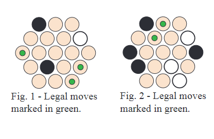
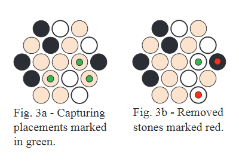
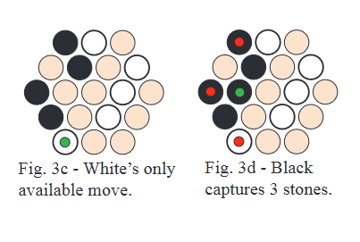

Rive
Board Game Arena 官方规则文档
Rive can be played on any odd sized, hexagonally patterned board, which starts out empty. The two players, Black and White, take turns placing stones of their own color on unoccupied cells on the board. There will always be a placement available. Players cannot pass on their turn.
The goal is to claim the majority of cells. Draws cannot occur in Rive.
Placement
A group here is comprised of interconnected stones of both colors. If you can place a stone in isolation, you must do so. Otherwise your stone must be placed adjacent to up to three groups, of which the largest must be as small as possible.

In Figure 1, the only legal stone placements are the cells marked with a green spot. These cells have no adjacent groups.
In Figure 2, the only legal placements are marked in green. These cells connect to a group of size one. All of the other empty cells connect to groups of size two.
Capturing
When you place a stone that connects to two or three groups, you must remove stones from the newly formed group, of either or both colors, to bring the group size down to one stone larger than the largest of the groups that was so combined. Selecting stones for removal from the newly formed group must be done in a way that does not split the group into two or more smaller groups.

In Figure 3a, the capturing placements are marked in green. It is not legal to place a stone adjacent to the group of size three, since that’s larger than the minimum possible, two.
In Figure 3b, White has placed the white stone marked with a green spot and selected the two stones marked with red for removal, resulting in a new group of size three - one larger than the largest group joined with the placement.
There are also two non-capturing placements available in Figure 3a, at the bottom of the board. There is no requirement to make a capturing placement if a non-capturing placement is available.
Multiple placements per turn
When you make a capture, you must add another stone to the board while it's still your turn. And you must continue to add stones during your turn until you make a non-capturing placement.

In Figure 3c, White completes their turn with their only available move, adjacent to a group of two.
In Figure 3d, Black creates a group of size four and must then place another stone while it’s still their turn.
Object of the game
You win with a majority of stones on a filled board.